Three musicians improvise at night: Nell at the piano, Otto with the bandoneón, Bo at the double bass. Nothing is recorded. Before each phrase, each of them checks what the others are playing and chooses to lead, answer, give room or rest. Code rules play every note. Between pieces an AI, when it is switched on, decides for each of them what to try in the next one. The stage is a 3D doll's house of Café Domínguez in Buenos Aires, 1917.
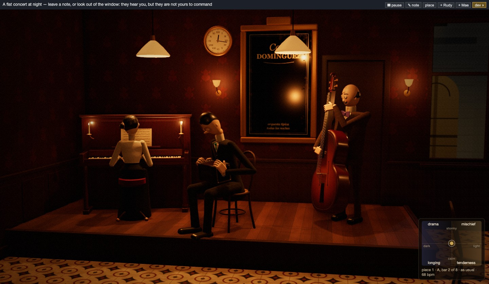
Sad and cheerful pieces sounded almost the same. Now a square field sets the character of the playing: dark on the left, light on the right, stormy at the top, calm at the bottom. Its corners are drama, mischief, longing and tenderness. Moving the dot changes the tempo, loudness, note length, accompaniment figures and the gaps after phrases. A note like “something sad” moves the dot as well. The “dev” button hides the developer controls and leaves the evening as a guest sees it.
Otto and Bo now come in through a door at the back of the stage and are in their places before their first tuning note. A wall clock starts at a quarter past midnight. The candles on the piano burn down and flicker when Nell plays loud; the theatre across the street closes, and the last tram passes before one. While the house was being built, the page froze for up to 12 seconds and notes came late. Now it is built in small steps, and no note is late.
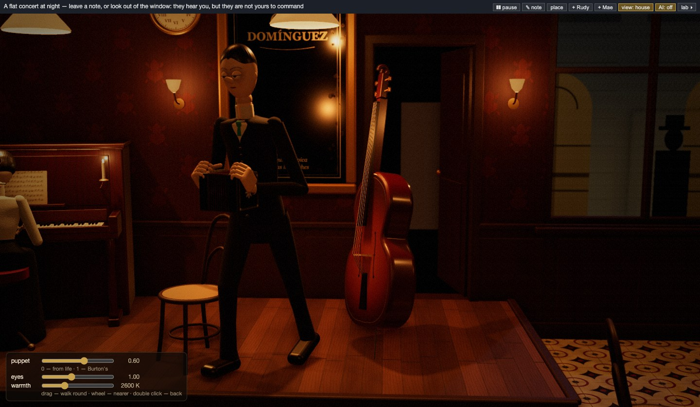
Otto and Bo now play the notes that sound, as Nell's hands already did. Otto's bellows open and close with his line, faster when he plays louder, and a finger presses a button for each note. Bo plucks the string of each note's pitch, and his left hand stops it at the right place on the neck. In v33 they watch each other. Each turns to whoever leads, the leader leans in, and on the last chord of a tango the others look at Nell.
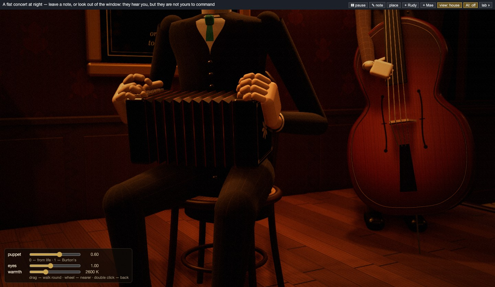
The house became 3D. The three are now turned wooden dolls in the clothes of the place. Otto wears a pinstripe three-piece with a turquoise tie, Bo a check suit with a violet bow tie, Nell a high-collared blouse with an amber brooch. The café has dim warm lamps, a mirror with its name in gilt and the Teatro Nuevo across the street. The mouse takes the camera round the stage. Three sliders change the look: dolls from lifelike to Tim Burton's, their eyes, the warmth of the light.
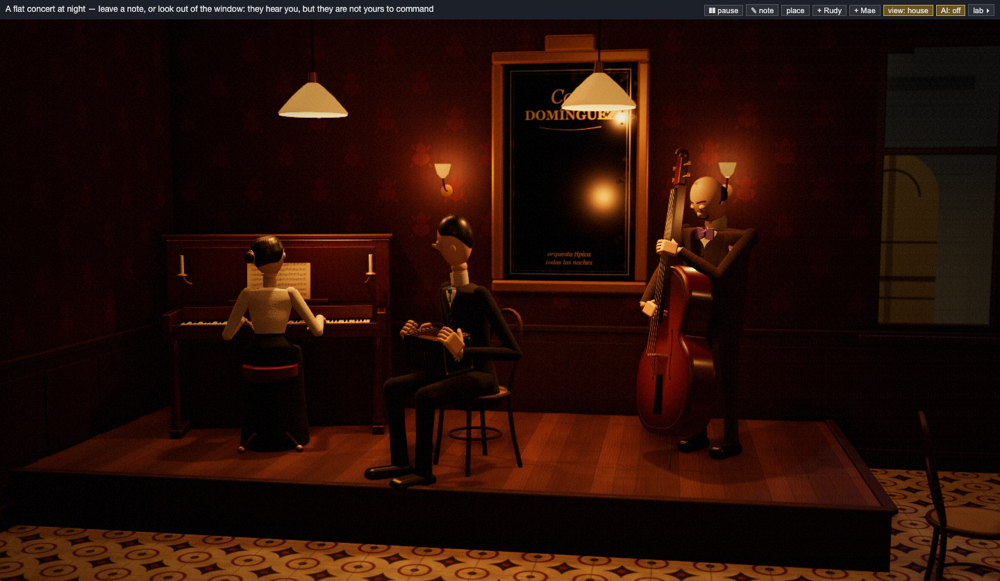
The first doll's house: Café Domínguez in Buenos Aires, 1917, drawn flat and cut open, with the Teatro Nuevo and a green tram in the window. The three are peg dolls in patchwork, in the colours of their tracks. Nell's hands follow the notes the code has scheduled: a hand lifts before a note and strikes the key of its pitch as it sounds. The music stayed the same, note for note.
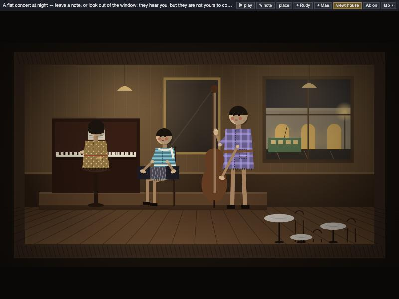
Buenos Aires got its own music, played by code rules without AI. It is a tango in two-four, with the habanera rhythm in the bass and the piano's left hand. It has three parts, played A B C A, and the bandoneón leads the first. Every tango ends on two short chords. In v29 pieces got their own length. A tango now follows the form of “El choclo” (1903), taken from free sheet music: 48 bars, where other pieces have 32.
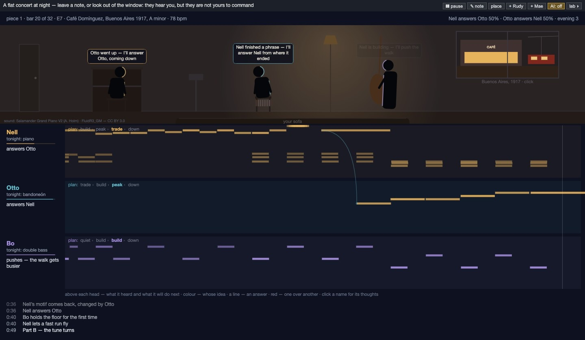
A guest picks a place and a year in the window, and the three now play that place's instruments. At The Haig in Los Angeles Nell has a trumpet and Otto a baritone sax. In New Orleans she plays the clarinet and he the cornet; in Buenos Aires he plays the bandoneón. Rudy and Mae, whom a guest can call on stage, change too. In New Orleans Mae plays the trombone and Rudy the drums; in Buenos Aires she plays the violin and he sings. The playing had grown monotonous, likely because of the habits they carried from evening to evening. In v24 I removed them, and the clap as well. v27 added a switch that turns the AI off.
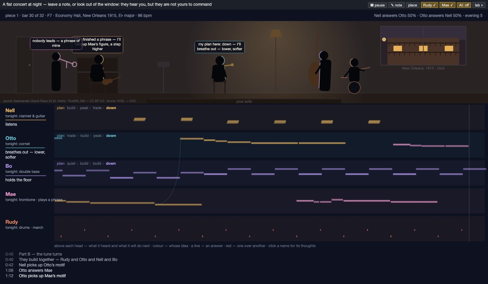
The synthesized piano sounded like a doorbell. v20 replaced the instruments with recordings: the Salamander Grand Piano, and the cello and double bass from FluidR3_GM, both under CC BY 3.0. In v21 each musician picks a move before every phrase, such as answer, build, give room or risk, and the move is shown above its head. In v22 a request sets the style: reggae, rock, pop or bossa nova. In v23 a guest can call two more: Rudy on the drums and Mae, who sings without words.
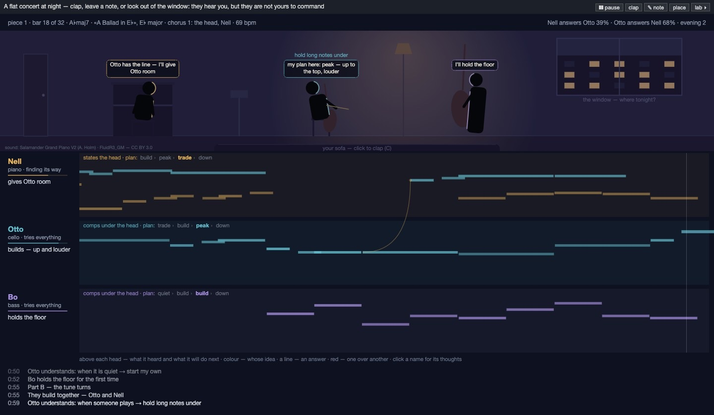
A click on the window opens postcards of six places and years, from Vienna in 1828 to Leningrad in 1985. In a place every piece is new. Its chords are built by the rules of that music, and keys and chords do not repeat in an evening. v17 evened out the time: a steady tempo, weight on the strong beats, swing as a feel. In v18 I softened tiredness: Nell had been too tired to start a line 57% of an evening, now 19%. In v19 evenings at home became a jazz session on six standards written for them.
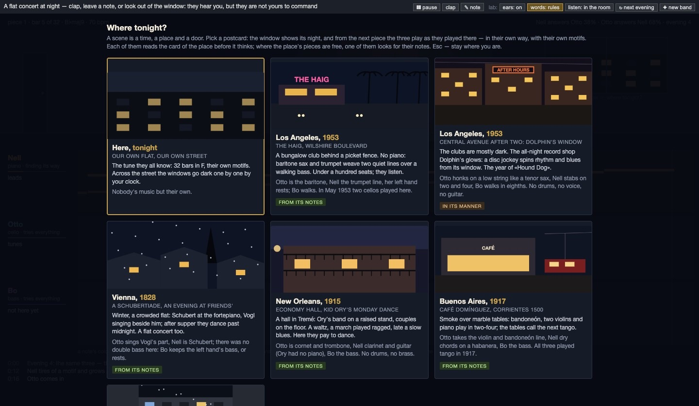
Each musician got its own text files: who it is, what it can do, its school and a diary. Bo has a jazz bassist's school, Otto a chamber cellist's, Nell both. In each pause each makes its own AI call, sees only what it played and heard, and decides what to do in the next piece. With the AI off, rules decide. In v14 a request for a particular piece brings its sheet music from the web. Only free pieces are fetched: folk tunes, or composers who died in 1955 or earlier. A protected song is played only in its manner.
I asked them to play the Moonlight Sonata. In v7 Nell plays its first movement note for note from a free edition, 1142 notes. In v8 a request on the stand is played right after the current bar. A jam on the sonata, v9–v10, is a circle on the harmony of its first four bars, six times round. At each bar line each musician chooses what to do with the written part: play it, change it, take another part or stay out. v11 added cues: a breath or a lifted bow a beat before the bar line. In v12 a motif wears out with repetition and comes back changed.
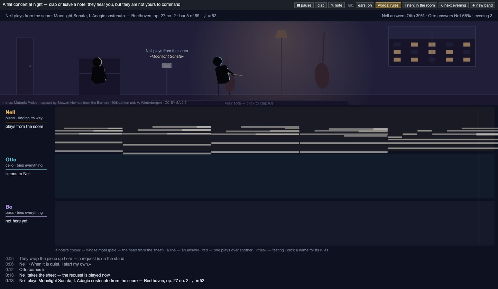
The first room: a flat at night. Nell plays alone; Otto and Bo come in through the door and tune. Pieces last 32 bars with a pause between them. A guest can clap or leave a note on the music stand. At first a note asking for a style changed nothing. By v6 it becomes the next piece. An AI writes its key, chords and themes in that manner, and the code checks every part before it is played.
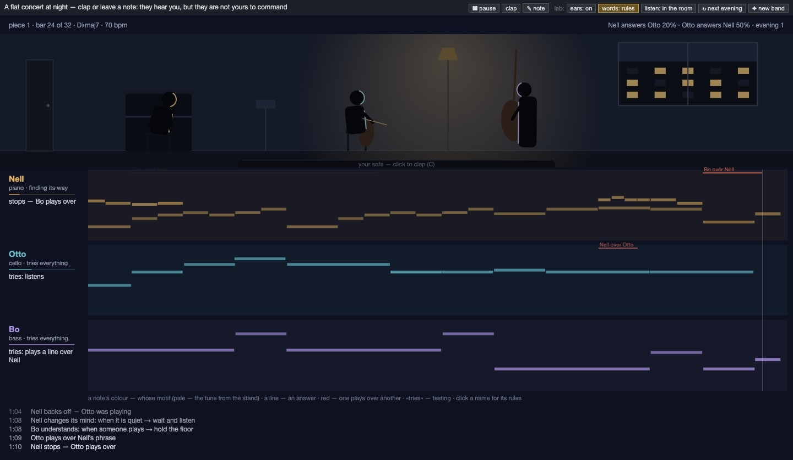
Nobody writes when they play any more. Each musician has energy that runs out, a set of moves and a taste. Being heard and playing together feel good; a mess and being played over feel bad. After each move it records how that felt and next time prefers what worked. When one move clearly wins, the rule appears in the log. Over four minutes, the time when two of them played a melody at once fell from 11.8% to 1.9%; without learning it stayed near 10%.
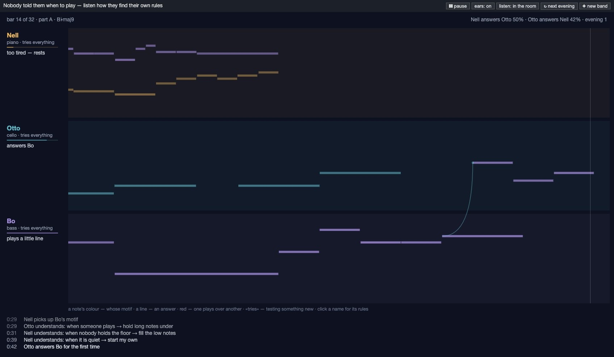
A neighbour upstairs was playing Aphex Twin on the piano, and I heard it through the ceiling. I thought that each track in a music editor could be a musician who decides for itself what to play. The first sketch is three tracks on hand-written rules: Nell leads with short figures, Otto answers, Bo holds the bass and stops when it gets crowded. The sound is synthesized in the browser. When I switched their hearing off, two of them played a melody at once 9.3% of the time; with hearing on, 1.6%. It started in my Game & Sim Lab and became a project of its own on 28 October.
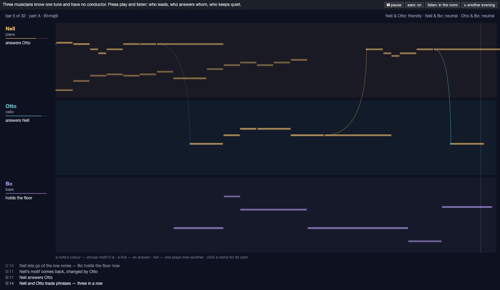